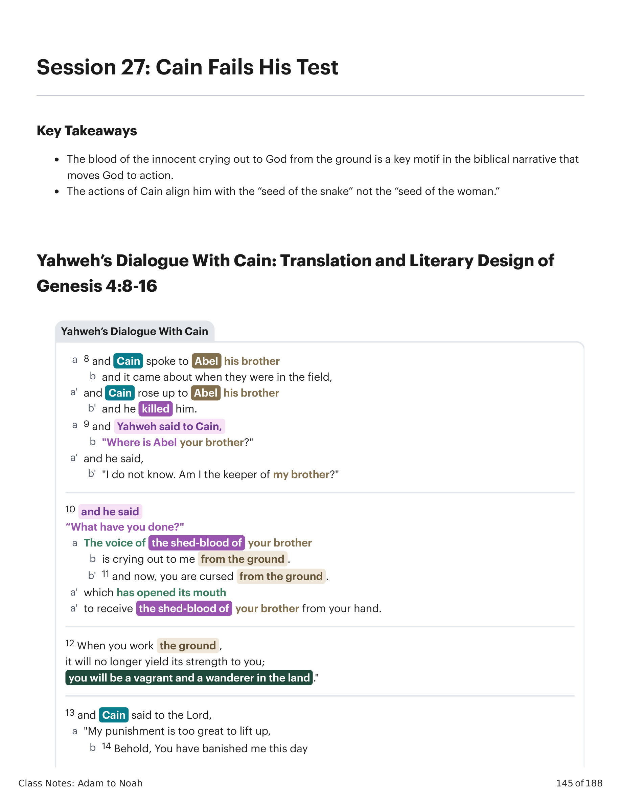
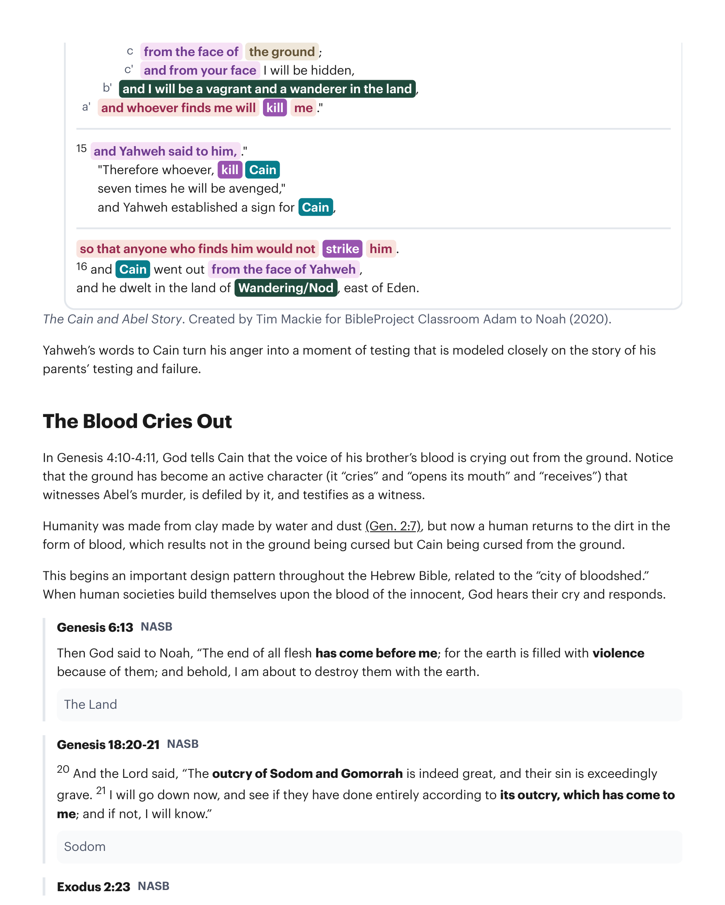
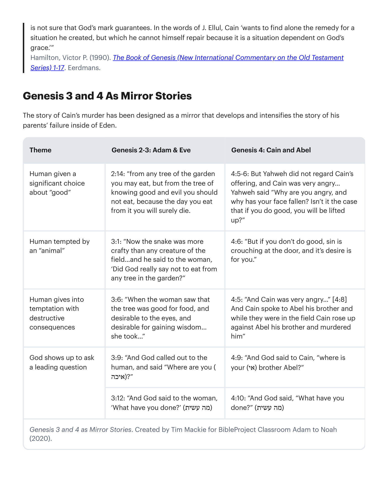
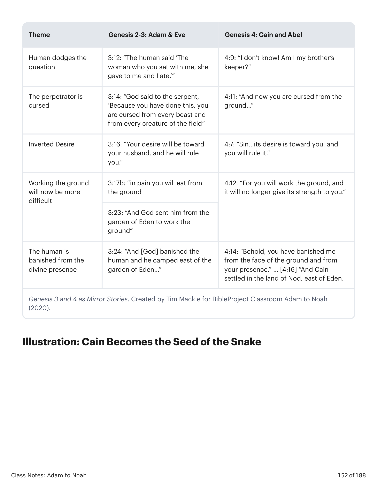

Em Gênesis 4:10-4:11, Deus diz a Caim que a voz do sangue de seu irmão está clamando desde a terra. Observe que a terra tornou-se um personagem ativo (ela "clama" e "abre sua boca" e "recebe") que testemunha o assassinato de Abel, é contaminada por ele, e testifica como testemunha. A humanidade foi feita de barro feito de água e pó (Gn 2:7), mas agora um humano retorna ao solo na forma de sangue, o que resulta não em a terra ser amaldiçoada mas Caim ser amaldiçoado desde a terra. Isto inicia um importante padrão de design por toda a Bíblia Hebraica, relacionado à "cidade de derramamento de sangue." Quando sociedades humanas se edificam sobre o sangue do inocente, Deus ouve seu clamor e responde. Gênesis 6:13 (NASB): "Então Deus disse a Noé: 'Chegou ao meu conhecimento o fim de toda a carne, porque a terra está cheia de violência por causa deles; e eis que estou para destruí-los com a terra.'" Gênesis 18:20-21 (NASB): "20 E o SENHOR disse: 'O clamor de Sodoma e Gomorra é, na verdade, grande, e o seu pecado é excessivamente grave. 21 Descerei agora, e verei se com toda a certeza têm praticado segundo o seu clamor que tem chegado a mim; e se não, saberei.'" Êxodo 2:23 (NASB): "E aconteceu que, depois de muitos dias, morreu o rei do Egito; e os filhos de Israel suspiraram por causa da servidão, e clamaram; e o seu clamor de socorro, por causa da sua servidão, subiu a Deus."In Genesis 4:10-4:11, God tells Cain that the voice of his brother's blood is crying out from the ground. Notice that the ground has become an active character (it "cries" and "opens its mouth" and "receives") that witnesses Abel's murder, is defiled by it, and testifies as a witness. Humanity was made from clay made by water and dust (Gen. 2:7), but now a human returns to the dirt in the form of blood, which results not in the ground being cursed but Cain being cursed from the ground. This begins an important design pattern throughout the Hebrew Bible, related to the "city of bloodshed." When human societies build themselves upon the blood of the innocent, God hears their cry and responds. Genesis 6:13 NASB: "Then God said to Noah, 'The end of all flesh has come before me; for the earth is filled with violence because of them; and behold, I am about to destroy them with the earth.'" Genesis 18:20-21 NASB: "20 And the Lord said, 'The outcry of Sodom and Gomorrah is indeed great, and their sin is exceedingly grave. 21 I will go down now, and see if they have done entirely according to its outcry, which has come to me; and if not, I will know.'" Exodus 2:23 NASB: "Now it came about in the course of those many days that the king of Egypt died. And the sons of Israel sighed because of the bondage, and they cried out; and their cry for help because of their bondage rose up to God."
Em Gênesis 4:13-4:14, Caim reclama da severidade das consequências e então culpa a Deus por seu exílio. Caim também levanta o importante fator de que tem sangue em suas mãos e que um "vingador de sangue" pode "encontrá-lo" e exercer justiça. Sua linguagem antecipa o parente-redentor, cuja responsabilidade familiar era vingar o assassinato de um parente (Nm 35:12-25). Deus "estabelece um sinal para Caim" (não "sobre" ele). A história de interpretação deste versículo é repleta de especulações imaginativas que não têm base no texto. A coleção mais antiga de interpretações é encontrada em um antigo comentário judeu sobre Gênesis (séc. IV-VI d.C.) chamado Gênesis Rabbá (Ginzberg, Louis, As Lendas dos Judeus, p. 107). Sete Opiniões Interpretativas sobre o Sinal de Caim: 1. Deus fez o sol nascer (como sinal de que Caim não seria morto por animais). 2. Ele o marcou infligindo-lhe lepra. 3. Ele lhe deu um cão para protegê-lo contra animais. 4. Ele o marcou com um chifre em sua testa (como degradação de sua forma humana). 5. Ele puniu Caim como um sinal (aviso) para futuros assassinos. 6. Ele perdoou parcialmente seu pecado como um sinal (exemplo) para futuros pecadores que se arrependem. 7. Ele permitiu que vivesse até o dilúvio.In Genesis 4:13-4:14, Cain complains of the severity of the consequences and then blames God for his exile. Cain also raises the important factor that he has blood on his hands and that an "avenger of blood" may "find" him and exact justice. His language hints forward to the kinsman redeemer, whose family responsibility it was to avenge the murder of a relative (Num. 35:12-25). God "sets a sign for Cain" (not "on" him). The history of interpretation for this verse is littered with imaginative speculations that are not grounded in the text. The earliest collection of interpretations is found in an early Jewish commentary on Genesis (4th-6th century A.D.) called Genesis Rabbah (Ginzberg, Louis, The Legends of the Jews, p. 107). Seven Interpretive Opinions on the Sign of Cain: 1. God caused the sun to rise (as a sign that Cain was not to be slain by animals). 2. He marked him by inflicting leprosy on him. 3. He gave him a dog to protect him against animals. 4. He marked him with a horn on his forehead (as a degradation of his human form). 5. He punished Cain as a sign (warning) to future murderers. 6. He partly pardoned his sin as a sign (example) for future sinners who repent. 7. He allowed him to live until the flood.
O "sinal para Caim" inicia um padrão de design-motivo na Bíblia Hebraica. Quando Deus conforta o mal da humanidade, ele geralmente traz justiça enquanto também mostra misericórdia. E ele marca esta distinção por meio de um sinal ('ot / אות), um símbolo que ele mesmo comunica o significado do evento em um nível profundo. Gênesis 9:11-15 (NASB*): "11 'Estabeleço a minha aliança convosco; e nunca mais toda a carne será exterminada pelas águas do dilúvio, nem haverá mais dilúvio para destruir a terra.' 12 E Elohim disse: 'Este é o sinal da aliança que estou firmando entre mim e vós e todo ser vivente que está convosco, para todas as gerações: 13 Ponho o meu arco nas nuvens, e ele será por sinal da aliança entre mim e a terra. 14 E acontecerá que, quando eu trouxer uma nuvem sobre a terra, o arco será visto nas nuvens; 15 e lembrarei da minha aliança, que é entre mim e vós e todo ser vivente de toda a carne, e nunca mais as águas se tornarão dilúvio para destruir toda a carne.'" *Palavras-Chave Adaptadas pelo Professor. O arco-íris é um sinal do julgamento e do resgate de Deus. Gênesis 17:10-14 (NASB): "10 'Esta é a minha aliança, que guardareis entre mim e vós e a tua descendência depois de ti: todo macho entre vós será circuncidado. 11 E sereis circuncidados na carne do vosso prepúcio, e isto será o sinal da aliança entre mim e vós.'" A circuncisão é um sinal do julgamento de Deus e de sua promessa eterna de suscitar uma descendência para Abraão. Êxodo 8:21-24; Êxodo 10:1-2; Êxodo 12:12-13: As pragas que Deus envia sobre o Egito são sinais do julgamento de Deus e de seu compromisso de salvar os israelitas. O sangue do cordeiro da páscoa nos umbrais é um sinal do julgamento e da misericórdia de Deus. Josué 2:12-13, 17-19: Os cordões escarlates de Raabe em Jericó são um sinal para Deus poupar sua família quando ele trouxer seu julgamento sobre a cidade. O sinal de Caim é o arquétipo de todos estes "sinais de poupança." Em cada instância, Yahweh poderia ferir e trazer ruína indiscriminadamente, mas em vez disso, ele disponibiliza sua misericórdia a um remanescente, mostrando sua misericórdia com um sinal visual. A história que estabelece este padrão de design não nos diz o que é o sinal, mas apenas o que ele significa: que Caim está sob o julgamento de Deus por seu assassinato, e ninguém mais tem o direito legal ou moral de exercer vingança sobre ele. Mas Caim também está sob a misericórdia de Deus, que é marcada por "um sinal para Caim." Este é um bom exemplo de como os padrões de design funcionam na Bíblia Hebraica. Neste caso, a primeira aparição de um motivo é a mais ambígua, e é apenas através da repetição que o motivo ganha clareza. Note que todos os sinais são fenômenos visuais (arco no céu, corte de carne, sangue no umbral, cordão de fio escarlate na janela). Também é possível que em Gênesis 4:15, nos seja dado o conteúdo do sinal na forma da declaração de proteção de Yahweh para Caim.The "sign for Cain" begins a design pattern motif in the Hebrew Bible. When God confronts humanity's evil, he usually brings justice while also showing mercy. And he marks this distinction by means of a sign ('ot / אות), a symbol that itself communicates the meaning of the event on a deep level. Genesis 9:11-15 NASB*: "11 'I set up my covenant with you; and all flesh shall never again be cut off by the water of the flood, neither shall there again be a flood to ruin the earth.' 12 And Elohim said, 'This is the sign of the covenant, which I am giving between me and you and every living creature that is with you, for all successive generations; 13 I give my bow in the cloud, and it shall be for a sign of a covenant between me and the earth. 14 It shall come about, when I bring a cloud over the earth, that the bow will be seen in the cloud, 15 and I will remember my covenant, which is between me and you and every living creature of all flesh and never again shall the water become a flood to ruin all flesh.'" *Key Words Adapted by Teacher. The rainbow is a sign of God's judgment and rescue. Genesis 17:10-14 NASB: "10 'This is my covenant, which you shall keep, between me and you and your seed after you: every male among you shall be circumcised. 11 And you shall be circumcised in the flesh of your foreskin, and it shall be the sign of the covenant between me and you.'" Circumcision is a sign of God's judgment and his eternal promise to raise up a seed for Abraham. Exodus 8:21-24; Exodus 10:1-2; Exodus 12:12-13: The plagues that God sends on Egypt are signs of God's judgment and his commitment to save the Israelites. The blood of the passover lamb on the doorposts is a sign of God's judgment and mercy. Joshua 2:12-13, 17-19: Rahab's scarlet cords in Jericho are a sign for God to spare her family when he brings his judgment on the city. Cain's sign is the archetype of all these "signs of sparing." In each instance, Yahweh could strike and bring ruin indiscriminately, but instead, he makes his mercy available to a remnant, showing his mercy with a visual sign. The story that sets up this design pattern does not tell us what the sign is but only what it means: that Cain stands under God's judgment for his murder, and no one else has the legal or moral right to exact vengeance on him. But Cain also stands under God's mercy, which is marked by "a sign for Cain." This is a good example of how design patterns work in the Hebrew Bible. In this case, the first appearance of a motif is the most ambiguous, and it is only through repetition that the motif gains clarity. Notice that all of the signs are visual phenomena (bow in the sky, cutting of flesh, blood on door frame, cord of scarlet thread on window). It's also possible that in Genesis 4:15, we are given the content of the sign in the form of Yahweh's declaration of protection for Cain.

"[O] significado não é: quem matar Caim será punido sete vezes mais do que um que mata qualquer outra pessoa; tal pena não estaria de acordo com a justiça. Sete (שבע, šebhaʿ) é o número da completude (veja Gênesis 1); e שבעתים šibhāthayim — isto é, sete vezes — denota em medida completa, com toda a severidade da lei. Compare Salmo 12:6 'ouro purificado sete vezes'; ou Salmo 79:12 'retribui sete vezes ao peito de nossos vizinhos.' Aquele que mata Caim merecerá ser punido com a máxima severidade, porque será culpado de uma dupla ofensa: o crime de derramar sangue, e o pecado de desprezar o julgamento do Senhor ao aumentar o castigo divino.""[T]he meaning is not: whoever slays Cain will be punished seven times as much as one who kills any other person; such a penalty would not be in accord with justice. Seven (שבע, šebhaʿ) is the number of completeness (see Genesis 1); and שבעתים šibhāthayim—that is, seven times—connotes in complete measure, with the full stringency of the law. Compare Psalm 12:6 'gold that is purified seven times;' or Psalm 79:12 'return sevenfold into the bosom of our neighbors.' The one who slays Cain will deserve to be punished with the utmost severity, because he will be guilty of a dual offense: the crime of shedding blood, and the sin of contemning the Lord's judgement by augmenting the divine punishment."
Cassuto, U. (1961). Um Comentário sobre o Livro de Gênesis (Parte I): de Adão a Noé. Magnes Press.Cassuto, U. (1961). A Commentary on the Book of Genesis (Part I): from Adam to Noah. Magnes Press.
"A natureza precisa do sinal permanece incerta, mas sua função é clara. Assim como as vestes dadas a Adão e Eva após a queda (Gênesis 3:21) serviam para lembrá-los de seu pecado e da misericórdia de Deus, assim também a marca colocada em Caim. Como um dispositivo protetor contra inimigos potenciais ela pode evitar a morte; nesse sentido, a punição antecipada é suavizada. Mas ao mesmo tempo serve como um lembrete constante do banimento de Caim, seu isolamento de outras pessoas.""The precise nature of the sign remains uncertain, but its function is clear. As the clothing given to Adam and Eve after the fall (Gen. 3:21) served to remind them of their sin and God's mercy, so does the mark placed on Cain. As a protective device against potential enemies it may stay death; in that sense, the anticipated punishment is softened. But at the same time it serves as a constant reminder of Cain's banishment, his isolation from other people."
Wenham, Gordon J. (1987). Gênesis 1-15 (Comentário Bíblico Word). Thomas Nelson Inc.Wenham, Gordon J. (1987). Genesis 1-15 (Word Biblical Commentary). Thomas Nelson Inc.
Imediatamente após Deus prover um sinal protetor para Caim, ele "saiu da presença de Yahweh, e habitou na terra de Nod ('errância', נוד), a leste do Éden" (Gn 4:16). Isto é, ele deixa a cena de 4:1-16, fora da "porta" do jardim, e deixa o Éden e sua família. Fora do Éden, Caim faz duas coisas que surpreendem o leitor que poderia ter assumido que Adão e Eva eram os únicos ou primeiros seres humanos. Ele engravida sua esposa (de onde ela veio?), e ele constrói uma cidade (para quem?!). O que está acontecendo aqui? A Esposa de Caim: Embora nenhum outro irmão de Caim ou Abel seja mencionado na história, aprendemos em Gênesis 5:4 que Adão e Eva tiveram outros filhos e filhas após Caim e Abel. Mas não é provável que devamos pensar que Caim casou-se com uma de suas irmãs. Seu exílio do Éden é também um exílio de sua família. Este parece ser todo o ponto de sua punição — isolamento ("um fugitivo e errante serás", Gn 4:12). Em vez de assumir que Caim está indo para um mundo vazio de humanos, este detalhe é um dos principais indicadores de que Gênesis 2:4-3:24 é um relato arquetípico dos primeiros sacerdotes humanos, não dos primeiros humanos na Terra. Nesse caso, Caim está retornando à humanidade da qual seus pais foram selecionados.Immediately after God provides a protective sign for Cain, he "went out from before the face of Yahweh, and he settled in the land of 'wandering (nod / נוד), east of Eden'" (Gen. 4:16). That is, he leaves the scene of 4:1-16, outside the "door" of the garden, and he leaves Eden and his family. Outside of Eden, Cain does two things that surprise the reader that may have assumed Adam and Eve were the only or first human beings. He impregnates his wife (where did she come from?), and he builds a city (for whom?!). What's going on here? Cain's Wife: While no other siblings of Cain or Abel are mentioned in the story, we do learn in Genesis 5:4 that Adam and Eve did have other sons and daughters after Cain and Abel. But it is not likely that we are meant to think that Cain married one of his sisters. His exile from Eden is also an exile from his family. This seems to be the whole point of his punishment—isolation ("a vagrant and wanderer you will be," Gen. 4:12). Instead of assuming that Cain is going into a world empty of humans, this detail is one of the main indicators that Genesis 2:4-3:24 is an archetypal account of the first human priests, not of the first humans on Earth. In that case, Cain is returning to the humanity from which his parents were selected.

Gênesis 4:17 Tradução do Instrutor: "E ele edificou uma cidade, e chamou o nome da cidade, conforme o nome de seu filho, 'dedicada' (heb. khanok / חנוך)." Há múltiplas pistas de que esta cidade é um desenvolvimento negativo, ou ao menos altamente ambíguo. Após a declaração de proteção de Deus sobre Caim, Caim deixa o Éden e provê sua própria forma de proteção por meio de uma cidade (uma coleção murada de casas). A construção da primeira cidade, então, é uma demonstração da falta de confiança de Caim na capacidade de Yahweh de "ser seu guarda." Esta cidade protege o assassino Caim, muito como as posteriores cidades de refúgio (Nm 35:6-15). E após múltiplas gerações, Khanok tornar-se-á o tipo de lugar que protege um assassino ainda mais hediondo, Leméque. No design literário de Gênesis 1-11, a cidade de Caim corresponde à construção da cidade da Babilônia, que também é um desenvolvimento negativo. Talvez o ato de Caim seja um de desafio. Ele já teve o suficiente da vida nômade. Ele se recusa a permanecer sob os termos de Deus por mais tempo. A única outra referência a construir uma cidade em Gênesis 1-11 é o incidente em Babel. "'Vinde, edifiquemos para nós uma cidade...' (11:4). Aqui todo o projeto de construir cidade e erguer torre é um que Deus condena ... O ato de Caim de construir cidade é uma tentativa de prover segurança para si mesmo, uma segurança que ele não tem certeza de que a marca de Deus garante."Genesis 4:17 Instructor's Translation: "And he built a city, and he called the name of the city, according to the name of his son, 'dedicated' (Heb. khanok / חנוך)." There are multiple clues that this city is a negative, or at least highly ambiguous, development. After God's declaration of protection over Cain, Cain leaves Eden and provides his own form of protection by means of a city (a walled collection of homes). The building of the first city, then, is a display of Cain's lack of trust in Yahweh's ability to "be his keeper." This city protects the murderer Cain, much like the later cities of refuge (Num. 35:6-15). And after multiple generations, Khanok will become the kind of place that protects an even more heinous murderer, Lemek. In the literary design of Genesis 1-11, Cain's city corresponds to the building of the city of Babylon, which is also a negative development. Perhaps Cain's act is one of defiance. He has had enough of nomadic life. He refuses to abide under God's terms any longer. The only other reference to building a city in Genesis 1–11 is the incident at Babel. "'Come, let us build ourselves a city ...' (11:4). Here the whole city-building, tower-erecting project is one that God condemns ... Cain's act of city building is an attempt to provide security for himself, a security he is not sure that God's mark guarantees."
Hamilton, Victor P. (1990). O Livro de Gênesis (Série Comentário Internacional do Novo Testamento) 1-17. Eerdmans.Hamilton, Victor P. (1990). The Book of Genesis (New International Commentary on the Old Testament Series) 1-17. Eerdmans.

Biologicamente, Caim é "a descendência da mulher," mas ele se torna "a descendência da serpente" por suas escolhas. Com base nisto, o linhagem sanguínea determina fidelidade? O que podemos esperar de famílias escolhidas ou indivíduos escolhidos no resto da Bíblia Hebraica?Biologically, Cain is "the seed of the woman," but he becomes "the seed of the snake" by his choices. Based on this, does bloodline determine faithfulness? What can we expect from chosen families or chosen individuals in the rest of the Hebrew Bible?